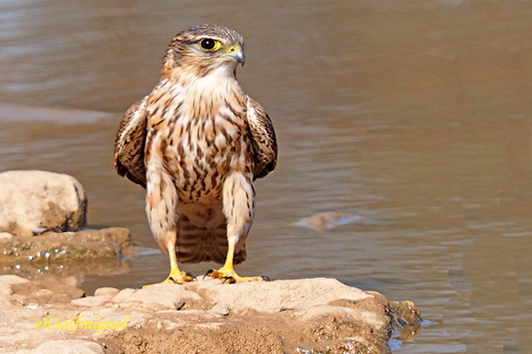

El esmerejón (Falco columbarius) es una especie de ave falconiforme de la familia Falconidae que cría en marismas del norte de Europa y Norteamérica. En invierno se encuentra por toda Europa y norte de África.

La hembra es de mayor tamaño que el macho, el cual es de aspecto rollizo, dinámico, con un cuerpo robusto, dorsalmente gris azulado, con una banda negra distal en la cola y un tono oscuro en los extremos de las alas, que son apuntadas. Es muy semejante en su silueta de vuelo al cernícalo vulgar (Falco tinnunculus).
Pasa gran parte de su tiempo perchado, oteando el paisaje. En verano es difícil de ver, y más si nidifica en el suelo. Se abalanza sobre intrusos desde su percha aérea, sobre, generalmente, árboles. Su voz es en sonido agudo, de repetición rápida.
El nido es una pequeña depresión en el suelo; a veces, aprovecha nidos viejos de cuervos, en los árboles. Contiene de tres a seis huevos, puestos en una única nidada, de abril a junio. Durante la época de cría, el macho se ocupa de la caza, mientras que la hembra es la encargada de pasar la alimentación a los polluelos.
Se alimenta de pájaros que captura al vuelo, además de algunos insectos también voladores y raramente de pequeños roedores.
Entradas sugeridas: Cernícalo Halcón Alcotán